6 Meses Amándonos😇
6 Meses Felicidad🤩
6 Meses de Aprendizaje🧐
6 Meses Escuchándola😍
6 Meses de Tenerla a mi lado😊
El Comienzo de Nuestra Historia
Cuando Vi Esta Foto en Su Perfil 🤓
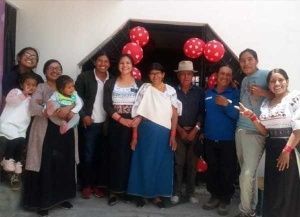Mi Corazón se puso muy alegre, no sabia que iba ha pasar, si me reconocería jeje, pero tomé la valentía de ponerme en contacto, aunque sea por mensajes.
Nuestra Primera Cita por Zoom 🤩
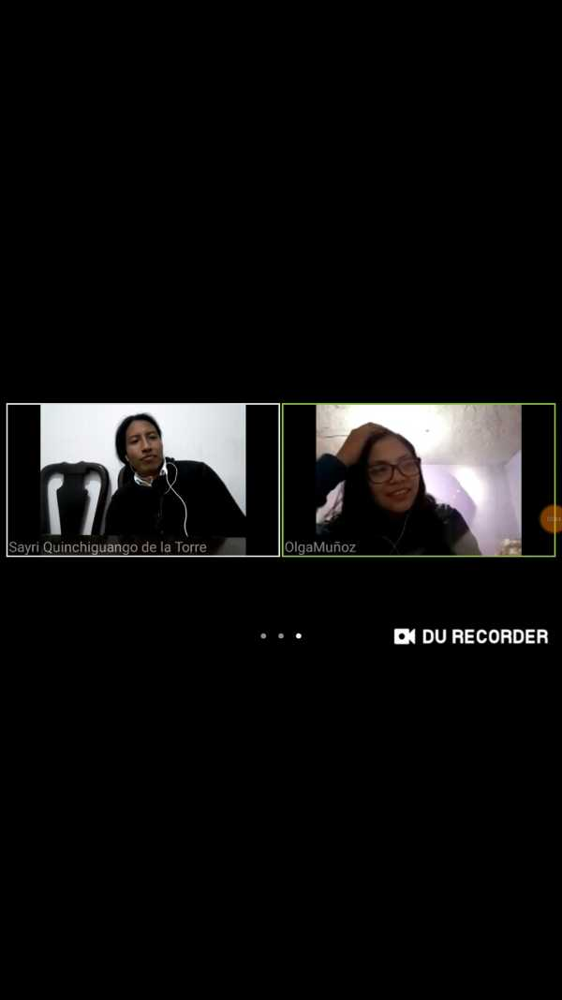Quiero volver a ser su Investigador de nuevo.
6 Meses de Esta Foto 😍
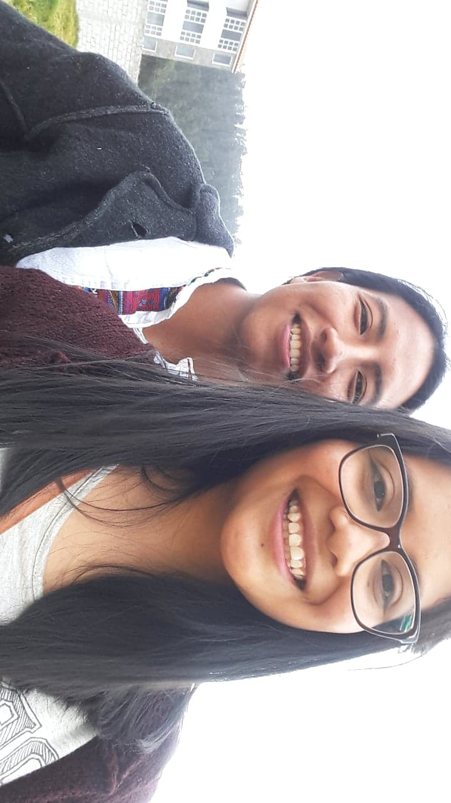Este día estuve tan nervioso, pero con confianza a la vez. Desde el momento que pensé que tenía que decirle SEA MI NOVIA, ese deseo de que decirle que sea Mi Amada Novia, nacieron esas noches de nuestras conversaciones son y continúan siendo las maravillosas.
Tengo Que Aceptar Que Siempre Estuve y Estoy Atento a Sus Fotos
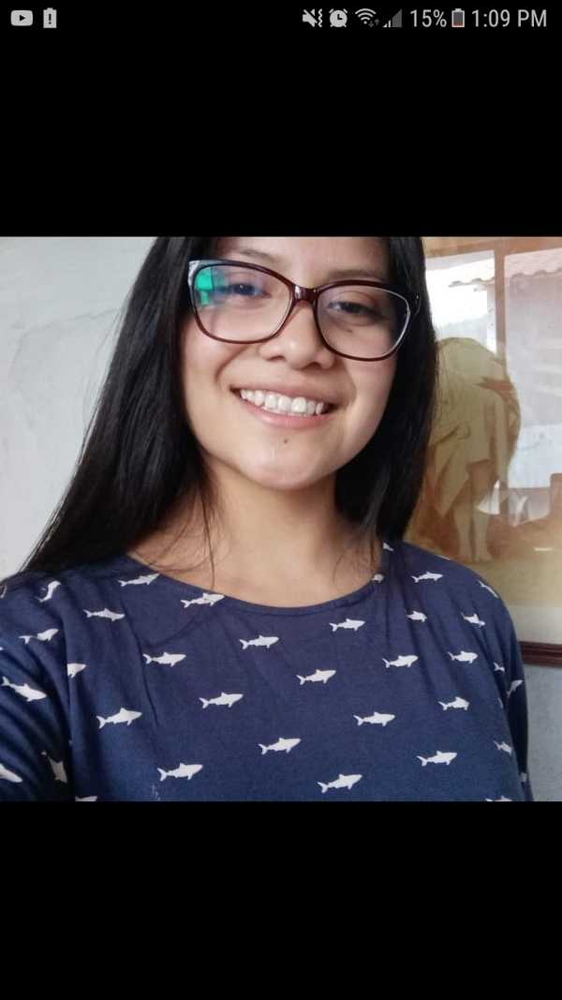La bendición de ser guapa, será que siempre suba fotos a sus redes sociales, SAYRI es al más emocionado que su propio Facebook jeje.😋
Hasta Las Fotos Que No Sabe jeje
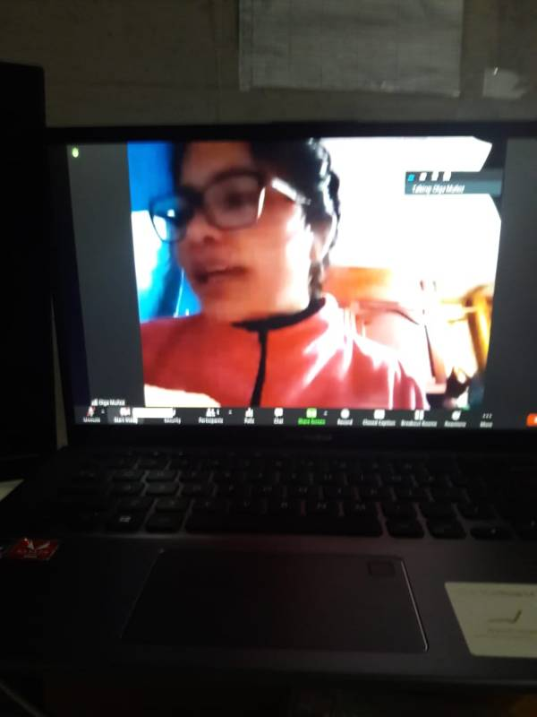En las clases de Instituto al contrario de poner en pantalla grande al maestro, Mi Novia era a quien estuve atento. 😉
Cuando El Público Nos Comenzó a Ver 🧐
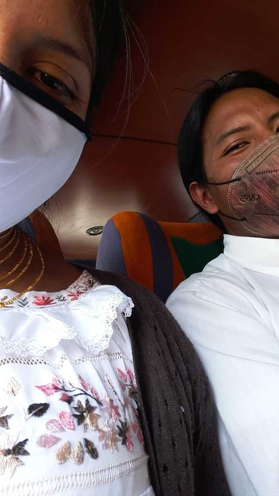Que las personas, que los amigos, sepan que Olguita es mi Novia, me hace muy feliz. En mi mente digo: "Público ya vayan aconstumbrándose ha vernos xD"
Aunque Sea 10 o 20 Minutos Verla a Usted Mi Amor, es TODO
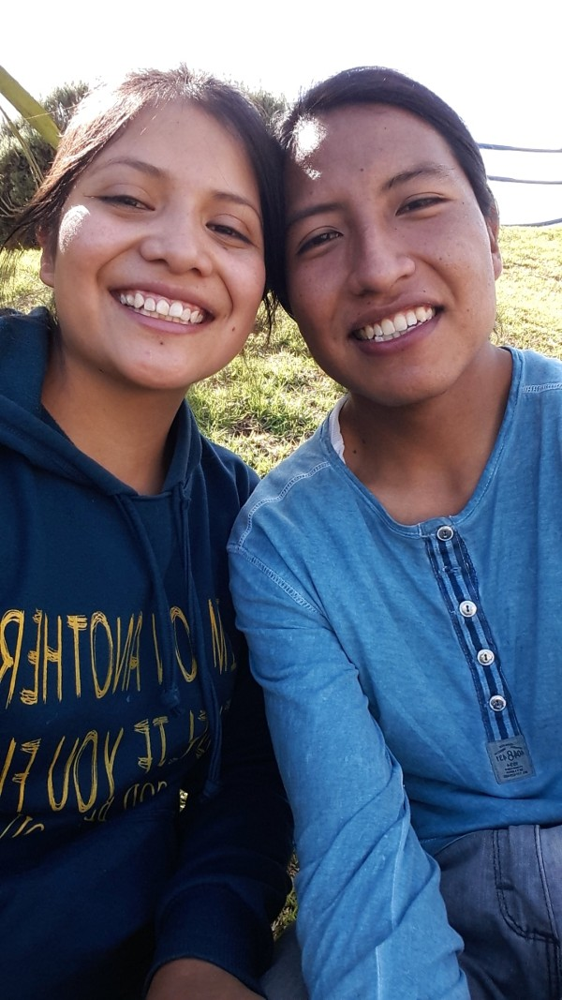No importa si estamos despeinados jeje. 🤪
También Muy Arreglados y Guapos 😘
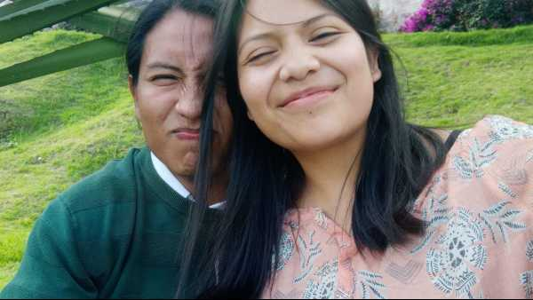Su peinado solo dura 15 minutos o menos, pero me encanta acomodar sus cabellos rebeldes jeje.
MI PRINCESA 😊
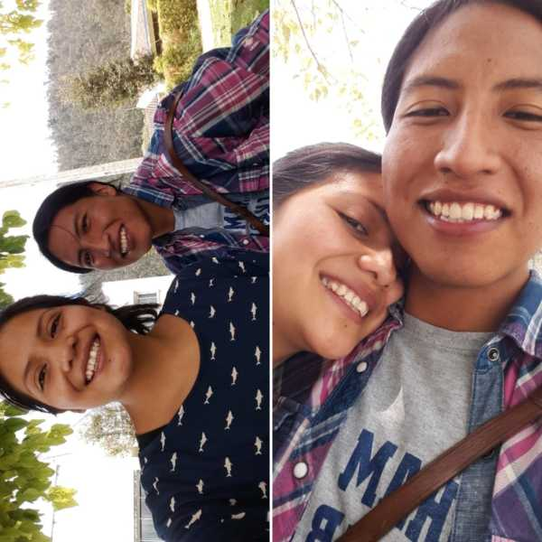No recuerdo como nació el decirle que usted es mi Princesa, pero me encanta decir eso, me es un recuerdo para saber como tengo que tratarla, como una Hija de un Padre Celestial que es.
SIEMPRE ADMIRO SU ESFUERZO DE HACER SENTIR BIEN A LOS DEMAS, Especialmente a Mi
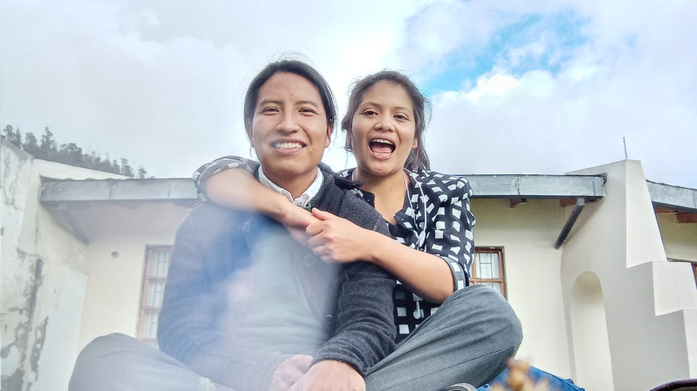Creo que esta caracteristica de hacer lo posible por hacerme reir, es algo que es muy especial en usted, siempre voy a amar sus locuras jeje.
Estoy Completo a Su Lado 😀
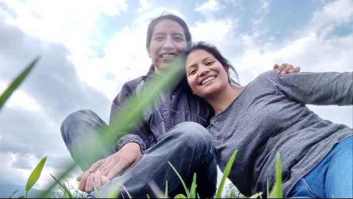Es muy especial conversar con usted Mi Amor, siempre vemos una parte alegre o graciosa de cada cosa o tema de conversacion.
SAYRI También lo Es
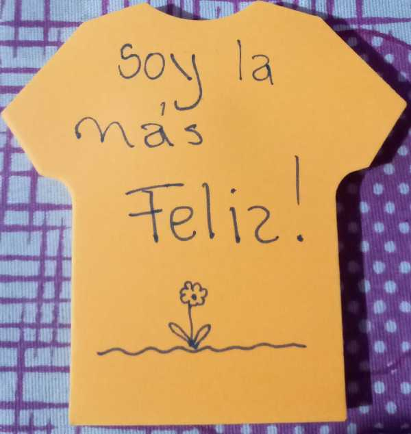Me Alegra que quizás le traiga alegria jeje.
Un Deber
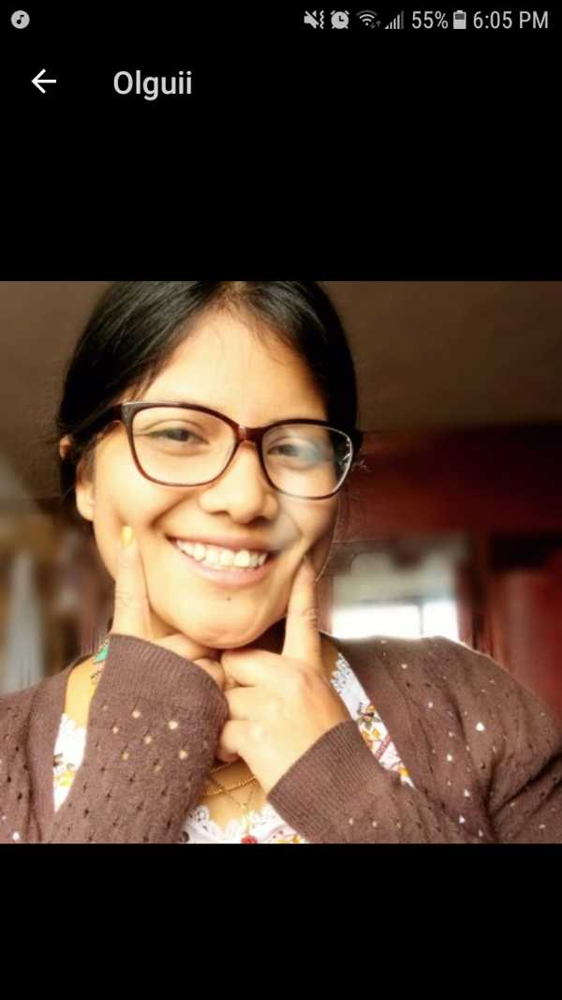El deber de Sayri será mantener esta Sonrisa de mi Princesa.